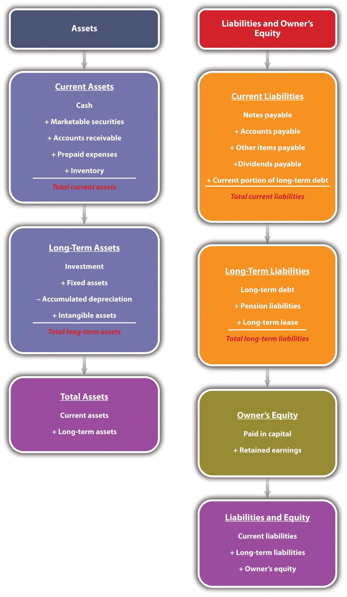
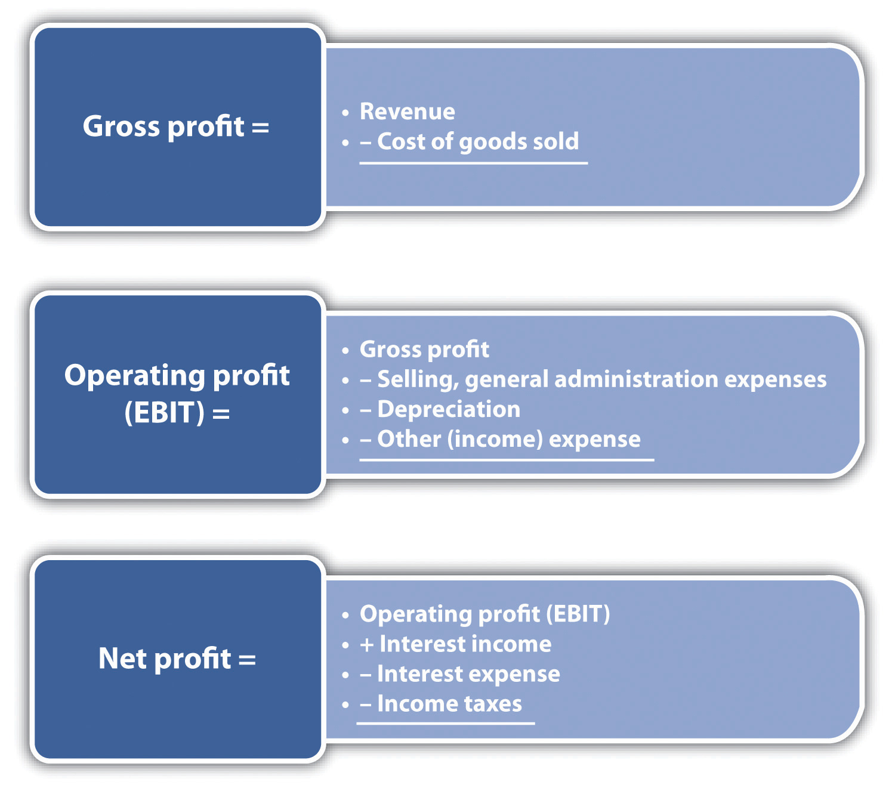
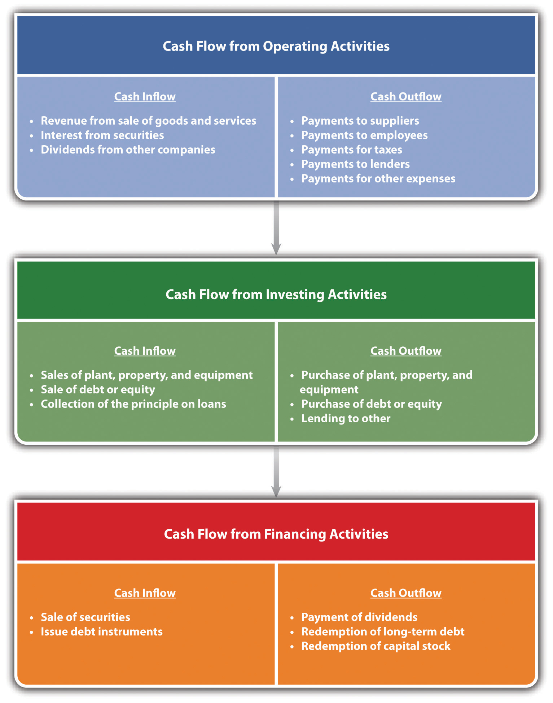
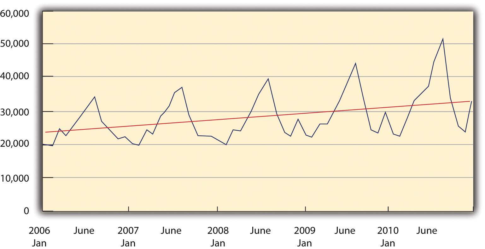
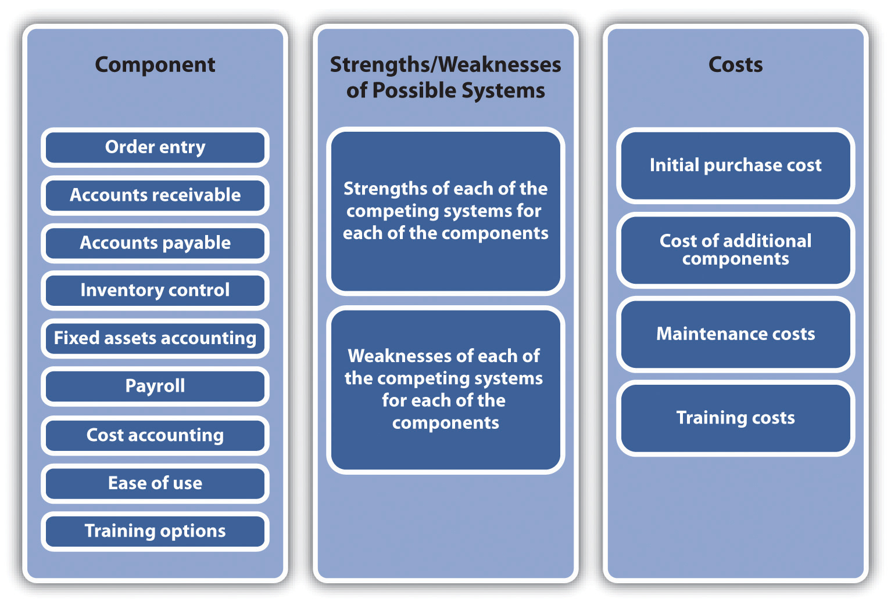

Source: Used with permission from Simione Consultants LLC.
Health care is the largest single industry in the US economy. Currently, health care represents nearly 17 percent of the gross domestic product, encompassing nearly 600,000 establishments and employing more than 14 million people. The health-care industry covers an extraordinary wide range of businesses and operations. It includes large hospitals, diagnostic laboratories, nursing care facilities, and the offices of doctors and dentists. Each establishment has individuals that possess considerable expertise in their respective disciplines. However, they may not possess the knowledge or the expertise that would enable them to manage their establishments in the most efficient manner. That is where firms like Simione Consultants LLC play a vital role.
Simione Consultants LLC represents the evolution of consulting companies that have spun off from many accounting firms. Accountants are no longer merely reconciling accounts or preparing tax returns for their clients. They are now offering a broad range of consulting services. Simione Consultants LLC provides expert assistance to hospital-based and hospital-affiliated home health and hospice agencies, visiting nurse associations, small proprietary agencies, and large national chains. They provide services that one might expect from a firm whose origins were in a standard accounting practice—such as assisting in accounts receivables and cash-flow management. Other accounting services that they provide include financial analysis reports and the preparation of cost reports for the federal government. They can conduct in-depth cost analyses at a detailed and a granular level so that clients can improve their operational efficiencies. The compliance division consulting services include working with health-care attorneys, corporate compliance and audit departments, and government agencies such as the Office of the Inspector General. Its clinical operations division works closely with financial consultants to improve the financial health of its clients.
What makes Simione Consultants LLC distinct is its ability to go beyond these basic accounting tasks and provide vital ancillary support for its clients in this niche market. They are in a position to conduct the valuation of businesses or assist in mergers and acquisitions. They help clients with preparing a prospectus or assisting with negotiations. Their consulting services can advise on how a client can maximize its return on an information management system by identifying system requirements and specifying possible solutions. In addition, the company has developed a software product—“The Financial Monitor”—that provides quarterly home health and hospice reports with multiple valuable benchmarks, including national, state, and profit-status norms, to help their clients and the industry make informed financial decisions.
A measure of how firms such as Simione Consultants LLC have moved beyond balance accounts is the company’s ability to support a client’s marketing function. The firm can help build comprehensive marketing plans and assist clients in developing and improving sales materials and training.
Simione Consultants LLC began its work in the home health-care industry more than forty years ago with an agency in Hamden, Connecticut. It was the vision of William J. Simione Jr., the founding member, who saw an opportunity. With his brother Robert J. Simione, the managing principal, and a dedicated team of principals, management, and staff, William Simione has helped Simione Consulting LLC become one of the leading home health and hospice consulting companies in the United States with over a thousand clients. Robert Simione says that a company is only as good as the people who work for it, and Simione Consultants LLC has the best home health and hospice consultants in the country.
The older I get, the more interesting I find lawyers and accountants.Independent (London), April 21, 2010, quoted in “Accounting Quotes,” Qfinance, accessed February 14, 2012, www.qfinance.com/finance-and-business-quotes/accounting.
Alex James
Imagine that you invite a friend from China, who is visiting the United States for the first time, to a baseball game. Your friend has never been to a baseball game before and knows nothing of the game’s rules. He might notice on the scoreboard listings for runs, hits, and errors. Your friend might also see notations on the number of strikes and balls. He does not know exactly what any of those terms mean, but he notices that some people in the stands applaud when the number of runs increases. Your friend might be amused by seeing individuals periodically running from one base to another; however, without knowing the basic rules of baseball, he cannot possibly understand what is actually occurring. He certainly could not comment on how well the game is going or provide suggestions about what one of the teams should do next. Most Americans would be in the same position if they were watching a cricket match. In both cases, you and your friend are in the same position of someone who wishes to run a business without having a fundamental understanding of accounting systems.
Warren Buffett has said that accounting is, to put it simply, the language of business. Without a fundamental understanding of this language of accounting and its set of rules, you are in the same position as your Chinese friend—you really do not know what is going on with a business. If someone is considering starting a business, he or she should possess some degree of fluency in this language. One does not expect this businessperson to be as knowledgeable as a certified public accountant (CPA) or an expert in tax issues. However, such businesspeople should have a clear expectation that they will be able to look at the key elements of an accounting system and interpret how well their businesses are doing. They should be able to track some of the key tasks and elements associated with a comprehensive accounting system. As we will see in Section 9.4 "The Three Threads", computerized accounting programs for small businesses have greatly simplified this responsibility.
AccountingThe art of recording, classifying, and summarizing in a significant manner and in terms of money, transactions and events which are, in part at least, of a financial character, and interpreting the results thereof. is defined by the American Institute of Certified Public Accountants (AICPA) as “the art of recording, classifying, and summarizing in a significant manner and in terms of money, transactions and events which are, in part at least, of a financial character, and interpreting the results thereof.”Ramnik Singh Wahla, Accounting Terminology Bulletin No. 1: Review and Résumé, 1953, accessed February 14, 2012, c0403731.cdn.cloudfiles.rackspacecloud.com/collection/papers/1950/1953_0101_AccountingReview.pdf. Put more simply, it is essentially an information system. Accounting provides critical information to potential investors and businesses managers. Accounting may, in fact, be one of the oldest information systems known to humans. Some have argued that accounting systems were the impetus for the development of writing systems in Mesopotamia.Denise Schmandt-Besseart, “An Ancient Token System: The Precursor to Numerals and Writing,” Archaeology 39 (1986): 32–39; Richard Mattessich, “Prehistoric Accounting and the Problem of Representation: On Recent Archeological Evidence of Middle East from 8000 B.C. to 3000 B.C.,” Accounting Historians Journal 14, no. 2 (1987): 71–91. Archaeologists have discovered clay tokens, dating back 10,000 years ago, which functioned as part of the inventory system measuring agricultural goods, such as grains and domesticated animals. By 3500 BC, these tokens were being stored in containers—known as bullae. Notations on the surface of these containers indicated the type and quantity of the tokens held within; for many, this system was the basis of an abstract system of written communication.Salvador Carmona and Mahmoud Ezzamel, “Accounting and Forms of Accountability in Major Civilizations: Mesopotamia and Ancient Egypt” (working paper, Instituto de Empresa Business School, Madrid, Spain, and Cardiff University, Cardiff, UK, 2005), accessed December 2, 2011, latienda.ie.edu/working_papers_economia/WP05-21.pdf.
Other ancient societies recognized the importance of carefully monitoring and recording economic transactions. The Roman Empire needed to finance its operations and employed the familiar concept of an annual budget to coordinate expenditures and taxation. It had treasury managers, known as questors, who were subject to periodic audits.John R. Alexander, History of Accounting (Princeville, HI: Association of Chartered Accountants in the United States, 2002), 4. The most famous monograph on accounting dates to Renaissance Italy. Luca Pacioli, a Franciscan friar and polymath, wrote Summa de Arithmetica, Geometria, Proportioni et Proportionalita in 1494. Essentially this was a math textbook, but it included a section on double-entry bookkeeping. This approach to accounting had been covered by Beredetto Cotrugli a century earlier.John R. Alexander, History of Accounting (Princeville, HI: Association of Chartered Accountants in the United States, 2002), 9. The text was immediately recognized as an important contribution and was one of the first books produced by Gutenberg. On a first reading, Pacioli’s coverage appears to be remarkably “modern.” It described how merchants should identify their assets and liabilities, note transitions as they occur, and identify them as either debits or credits. He pointed out that the total of debits and credits must be equal, thus his model became the basis of the balance sheet. In the intervening five hundred years, business has essentially adapted Pacioli’s approach. Obvious, over the last five centuries, businesses have grown both in size and in complexity, and accounting systems have grown with them. Therefore, it is important for any business regardless of size to be able to “count” on solid accounting information.
The exact nature of accounting support will be greatly determined by the type and size of the small business. The level of accounting support required by the nonemployer business will obviously differ significantly from the level required by a business generating tens of millions of dollars of revenue and employing hundreds of workers. The level of support will also be influenced by the business owner’s familiarity with accounting and the type of accounting information systems that have been determined as appropriate. Regardless of size or type, small businesses should plan on eventually acquiring the talents of an accountant. Preferably, the decision to use an accountant should occur with the creation of the business.
Hiring an accountant or an accounting firm is an important decision for a small business. Employing an accountant does not translate into this individual being a full-time employee of the business. At the start, most small businesses will use the accountant as a consultant or a contract employee. As they grow, some small businesses might benefit from acquiring the services of full-service accounting firm. Although some start-ups, particularly those that might be cash-strapped, use the services of the bookkeeper only, but this is ill-advised. Most small businesses will need the services of a CPA. Another type of accountant a small business might employ is known as an enrolled agent. These are accountants who have passed a tax test from the Internal Revenue Service (IRS).
When looking for an accountant, there are some issues that you should consider. Try to find an accountant who has some working familiarity with a particular type of business or industry. Hopefully, you will be able to find an accountant with whom you have some rapport. This is important because a good accountant is more than simply someone who balances the books. You should consult an accountant before determining what type of accounting system you intend to employ—cash versus accrual (see Section 9.1 "Understanding the Need for Accounting Systems"). Remember that an accountant will play an important role in assisting you in the creation, purchase, and development of an accounting information system for the business. This system is important in providing the appropriate information to the external community (for this audience the term financial accountingAn accounting system that provides the appropriate information to the external community—bankers, angel investors, venture capitalists, and/or the government. is often used)—bankers, angel investors, venture capitalists, and/or the government. The same accounting information system will also be an important component of internal controls (in this case the term managerial accountingAn accounting system that provides information to the management of a business and aids in internal controls—systems and policies that make a firm more efficient. is used)—the systems and policies by which you make a firm more efficient. In this role, an accountant can help develop appropriate policies with respect to cash control and inventory control. An accountant can play a critical role in developing business plans, particularly with respect to budgets and financial statements. As highlighted in Section 9.3 "Financial Ratio Analysis", you should consult an accountant before selecting an accounting software package. Quite often, an accountant can be extremely useful in training people to use such a software package.Jean Murray, “Finding Help with Bookkeeping and Accounting Tasks,” About.com, accessed December 2, 2011, biztaxlaw.about.com/od/businessaccountingrecords/a/findacpa.htm.
Why Warren Buffett Said Accounting Is the Language of Business
(click to see video)This video introduces the importance of accounting.
Why You Need an Accountant
(click to see video)This video explains why a small business needs the services of a professional accountant.
What CPAs Wish Every Small Business Knew
(click to see video)This video approaches small business’s need for accounting from the accountant’s perspective.
The system of double-entry bookkeeping is, perhaps, the most beautiful one in the wide domain of literature or science. If it were less known, it would be the admiration of the learned world.“Edwin T. Freedley,” Cyber Nation, accessed February 14, 2012, www.cybernation.com/victory/quotations/authors/quotes_freedley_edwint.html.
Edwin T. Freedley
The evolution of accounting has led to two major systems: the cash basis model and the accrual basis model. Before describing the two systems, we must identify a very important term—accounting transactions. When in business, we either receive money from a sale or spend money, such as in buying a piece of equipment. We can define these as transactions. The manner in which we record transactions defines the difference between a cash basis accounting system or an accrual accounting system.
In most cases, either system can be used by a business (there are situations under which a cash-based accounting system cannot be used, the details of which are discussed later), but regardless of the system used, a business must clearly specify which method is being employed.
In the cash-based accountingAn accounting system where transactions are recorded when money is either received or spent. system, a transaction is recorded when money is either received or spent. As an example, a business has three sales on June 29 of a particular year. The first sale is for $500, the second is for $1,000, and the third is for $300. However, the three customers use different methods of payment. The first customer pays for the product in cash, the second customer writes a personal check, and the third customer pays by credit card. The second customer’s personal check clears on July 5, while the credit card company transfers the $300 into the business’s account on July 3. Under the cash basis accounting system, the business would list the first sale of $500 as a June transaction, but it would list the second and third sales (totaling $1,300) as July transactions. The same logic is used with respect to expenditures. If the same firm purchased a laptop computer in July but did not have to pay for two months, then the transaction would be recorded in September.
Under the accrual accountingAn accounting system where transactions are recorded when they occur. system, transactions are recorded when they occur. If the aforementioned business was functioning under the accrual basis accounting system, then all three sales (totaling $1,800) would be recorded as June transactions, and the purchase of the laptop would be designated as a July transaction.
Generally, though, with some few exceptions, businesses must use the accrual basis accounting method if they have inventory of any component of items that they sell to the public and if the sales are more than $5 million per year. Other conditions under which the cash basis accounting system may not be used include C corporations, partnerships with at least one C corporation partner, and tax shelters.“Comparison of Cash and Accrual Methods of Accounting,” Wikipedia, accessed December 2, 2011, en.wikipedia.org/wiki/comparison_of_cash_method _and_accrual method of accounting. The major benefit of cash basis accounting is its simplicity. It greatly reduces the demand on bookkeeping. The cash basis system also provides a much more accurate indication of a company’s current cash position. This approach may be used to affect taxable income, which can be done by deferring billing so that payments are received in the next year.Melissa Bushman, “Cash Basis versus Accrual Accounting,” Yahoo! Voices, accessed December 2, 2011, voices.yahoo.com/cash-basis-versus-accrual-basis -accounting-147864.html?cat=3. However, there are drawbacks to the cash basis approach—the most serious being that it may provide a distorted or an inaccurate indication of profitability. The reality is that cash basis accounting systems are really only appropriate for businesses with sales under $1 million and that function basically on a cash basis.
Accrual basis accounting is in conformance with IRS and generally accepted accounting principles (GAAP) regulations. Although more complex and generally requiring greater bookkeeping with a more sophisticated approach to accounting, the accrual basis provides a more accurate indication of the profitability of a business. The major drawback of the accrual basis system comes with respect to understanding the business’s cash position. A firm may look profitable under this system, but if customers have not paid for the goods and services, the cash position might be dire.“Cash vs. Accrual Accounting,” Nolo.com, accessed December 2, 2011, www.nolo.com/legal-encyclopedia/cash-vs-accrual-accounting-29513.html. A summary of the pros and cons of the two systems is provided in Figure 9.1 "Comparative Accounting Systems".
Figure 9.1 Comparative Accounting Systems

Accrual versus Cash-Basis Accounting Video Presentation
(click to see video)A lecture on the two accounting systems.
Accrual Basis versus Cash Basis Accounting Power
(click to see video)A video with voice-over of a PowerPoint presentation.
It sounds extraordinary, but it’s a fact that balance sheets can make fascinating reading.“Accounting Quotes,” Qfinance, accessed February 14, 2012, www.qfinance.com/finance-and-business-quotes/accounting.
Mary, Lady Archer of Weston
As discussed in Chapter 5 "The Business Plan", all business plans should contain sets of financial statements. However, even after the initial business plan is created, these financial statements provide critical information that will be required for the successful operation of the business. They not only are necessary for tax purposes but also provide critical insights for managing the firm and addressing issues such as the following:
There are three key financial statements: the balance sheet, the income statement, and the cash-flow statement. Every business owner or manager needs to be able to correctly interpret these statements if he or she expects to continue successful operations. It should be pointed out that all three financial statements follow general formats. The degree of detail or in some cases terminology may differ slightly from one business to another; as an example, some firms may wish to have an extensive list of operational expenses on their income statements, while others would group them under broad categories. Likewise, privately held businesses would not use the term shareholders’ equity but rather use owner’s equity in their balance sheet, and they would not list dividends. This aim of this chapter is to provide the reader with a broad overview of accounting concepts as they apply to managing small and mid-sized businesses.
One should think of the balance sheetA report that examines a business’s assets, liabilities, and owner’s equity at some particular point in time. statement as a photograph, taken at a particular point in time, which images the financial position of a firm. The balance sheet is dominated by what is known as the accounting equation. Put simply, the accounting equation separates what is owned from who owns it. Formally, the accounting equation states the following:
assets = liabilities + owner’s equity.AssetsEconomic resources that are expected to produce a benefit in the future. are “economic resources that are expected to produce a benefit in the future.”Walter Harrison, Charles Lungren, and Bill Thomas, Financial Accounting, 8th ed. (Boston, MA: Prentice Hall, 2010), 63.LiabilitiesThe amount of money owed to outside claims—people outside of a business. are the amount of money owed to outside claims (i.e., money owed to people outside the business). Owner’s equityThe claims on a business by those who own the business.—also known as stockholders’ equity—represents the claims on the business by those who own the business. As specified in the accounting equation, the dollar value of assets must equal the dollar value of the business’s liabilities plus the owner’s equity. Before proceeding with any numerical example, let us define some important terms.
Current assetsAssets that will be held for less than one year. are assets that will be held for less than one year. They include cashThe most liquid of all assets., marketable securitiesStocks and bonds that a business may hold in the hope that they will provide a greater return to the business rather than just letting cash “sit” in a bank account., accounts receivablesThe amount of money due to a business from prior credit sales., notes receivableA formal debt instrument that will be paid to the company within a year., prepaid expensesAn accrual accounting term that represents payments in advance of their actual occurrence., and inventoryTangible goods, categorized as raw materials, WIP, and finished goods, held by a business for the production of goods and services.. These are listed in a specific order. The order is based on the degree of liquidity of each asset. Liquidity measures the ease in which an asset can be converted into cash. Naturally, cash is the most liquid of all assets. All firms should have cash readily available. The exact amount of the desirable amount of cash to be held at hand will be determined by the sales level of the anticipated cash receipts and the cash needs of the business.
Marketable securities are stocks and bonds that a business may hold in the hope that they would provide a greater return to the business rather than just letting cash “sit” in a bank account. Most of these securities can be easily turned into cash—should the need arise.
Accounts receivables represent the amount of money due to a business from prior credit sales. Not all firms operate on a strictly cash sales basis. Many firms will offer customers the opportunity to purchase on a credit basis. As an example, a furniture store sells a bedroom set worth $6,000 to a newlywed couple. The couple puts down $2,500 to fix the sale and then signs a contract to pay the remaining $3,500 within the next year. That $3,500 would be listed as accounts receivable for the furniture firm.
Prepaid expense is an accrual accounting term that represents a payment that is made in advance of their actual occurrence. Insurance would be an example of a prepaid expense because a company is paying premiums to cover damages that might occur in the near future. If a year’s worth of rent were paid at one time, it too would be viewed as a prepaid expense.
Inventory is the tangible goods held by a business for the production of goods and services. Inventory can fall into three categories: raw materials, work-in-process (WIP), and finished goods. Raw materials inventory represents items or commodities purchased by a firm to create products and services. WIP inventory represents “partially completed goods, part or subassemblies that are no longer part of the raw materials inventory and not yet finished goods.”“Work in Process,” BusinessDictionary.com, accessed December 2, 2011, www.businessdictionary.com/definition/work-in-process.html. The valuation of WIP should include the cost of direct material, direct labor, and overhead put into the WIP inventory. Finished inventory represents products that are ready for sale. Generally accepted accounting principles (GAAP) require that a business value its inventory on either the cost price or the market price—whichever is lowest. This inherent conservative approach to valuation is due to the desire to prevent the overestimation of inventory during inflationary periods.
Total current assets are the summation of the aforementioned items and are defined as follows:
total current assets = cash + marketable securities + accounts receivable + prepaid expenses + inventory.The next set of items in the asset section of the balance sheet is long-term assets. Long-term assetsAssets that will not be turned into cash within the next year. are those assets that will not be turned into cash within the next year. Long-term assets may include a category known as investments. These are items that management holds for investment purposes, and they do not intend to “cash in” within the upcoming year. They might consist of other companies’ stock, notes, or bonds. In some cases, they may represent specialized forms—money put away for pension funds. The next major category of long-term assets is fixed assets. Fixed assetsLong-term assets generally valued at their original cost. include plant, equipment, and land. Generally, these are valued at their original cost. The value of these assets will decline over time. As an example, you purchase a new car for $25,000. If you were to sell the same car one, two, or five years later, its value would be less than the original purchase price. This recognition is known as depreciationA noncash expense that specifically recognizes that assets decline in value over time., which is a noncash expense that specifically recognizes that assets decline in value over time. Accumulated depreciation is a running total of all depreciation on assets. Depreciation is also found on the income statement. Its presence in that financial statement enables a business to reduce its taxable income. There are many methods by which you can compute the depreciation value on fixed assets. These methods can be split into two broad categories: straight-line depreciation and accelerated depreciation. Straight-line depreciation is fairly easy to illustrate. In the example of the car, assume you purchased this car for company use. You intend to use it for five years, and at the end of the five years, you plan on scrapping the car and expect that its salvage value will be zero. This is illustrated in Table 9.1 "Depreciation Calculations".
Table 9.1 Depreciation Calculations
| Year 0 | Year 1 | Year 2 | Year 3 | Year 4 | Year 5 | |
|---|---|---|---|---|---|---|
| Depreciation | $0 | $5,000 | $5,000 | $5,000 | $5,000 | $5,000 |
| Accumulated depreciation | $0 | $5,000 | $10,000 | $15,000 | $20,000 | $25,000 |
| Net asset value | $25,000 | $20,000 | $15,000 | $10,000 | $5,000 | $0 |
Because the useful lifetime of the vehicle was five years, the original value of the vehicle was divided by five; therefore, the annual depreciation would equal $5,000 ($25,000/5 = $5,000 per year). The accumulated depreciation simply sums up the prior years’ depreciation for that particular asset.
Accelerated depreciation methods attempt to recapture a major portion of the depreciation earlier in the life of an asset. Accelerated depreciation yields tax-saving benefits earlier in the life of any particular fixed asset. The appropriate method of depreciating an asset for tax purposes is dictated by the Internal Revenue Service (IRS). One should look at the IRS publication 946—How to Depreciate Property—to get a better understanding of the concept of depreciation and how to properly compute it.
The last category of long-term assets is intangible assetsAssets that provide economic value to a business but do not have a tangible, physical presence.—assets that provide economic value to a business but do not have a tangible, physical presence. Intangible assets include items such as patents, franchises, copyrights, and goodwill. Thus the value of long-term assets can be calculated as follows:
long-term assets = investments + fixed assets − accumulated depreciation + intangible assets.The last element on the asset side of the balance sheet is the total assets. This is the summation of current assets and long-term assets.
On the other side of the balance sheet, we have liabilities plus owner’s equity. The elements of liabilities consist of current liabilities and long-term liabilities. These represent what a business owes to others. Current liabilitiesDebts and obligations that are to be paid within the year. are debts and obligations that are to be paid within a year. These include notes payableMoney, such as lines of credit from banks, short-term bank loans, mortgage obligations, or payments on specific assets, that is owed and must be repaid within the year., accounts payableShort-term obligations that a business owes to suppliers, vendors, and other creditors., other items payable (e.g., taxes, wages, and rents), dividends payable, and the current portion of long-term debt. In equation form,
current liabilities = notes payable + accounts payable + other items payable + dividends payable + the current portion of long-term debt.Notes payable represents money that is owed and which must be repaid within a year. It is fairly inclusive because it may include lines of credit from banks that have been used, short-term bank loans, mortgage obligations, or payments on specific assets that are due within a year.
Accounts payable are short-term obligations that a business owes to suppliers, vendors, and other creditors. It may consist of all the supplies and materials that were purchased on credit.
Other items payable can include items such as the payroll and tax withholdings owed to employees or the government but which have not as of yet been paid.
Dividends payable is a term that is appropriate for businesses structured as corporations. This category represents the amount that a business plans to pay its shareholders.
The current portion of long-term debt represents how much of the long-term debt must be repaid within the upcoming fiscal year. This would include the portion of the principal that is due in this fiscal year.
The other portion of liabilities is represented by long-term liabilities. These are debts payable over a period greater than one year and include long-term debt, pension fund liability, and long-term lease obligations. In equation form,
long-term liabilities = long-term debt + pension fund liabilities + long-term lease obligations.Total liabilities is the sum of current liabilities and long-term liabilities.
The other major component of the right-side of the balance sheet is owner’s (or stockholders’) equity. Owner’s equity represents the value of the shareholders’ ownership in a business. It is sometimes referred to as net worth. It may be composed of items such as paid in capital and retained earnings. Paid in capital is the amount of money provided by investors through the issuance of common or preferred stock.“Paid in Capital,” Investopedia, accessed December 2, 2011, www.investopedia.com/terms/p/paidincapital.asp. Retained earningsThe cumulative net income that has been reinvested in a business and not paid out to shareholders as dividends. is the cumulative net income that has been reinvested in a business and which has not been paid out to shareholders as dividends.“Retained Earnings,” The Free Dictionary, accessed December 2, 2011, financial-dictionary.thefreedictionary.com/Retained+Earnings.
The entire balance sheet and its calculations are summarized in Figure 9.2 "The Balance Sheet".
Figure 9.2 The Balance Sheet
In Table 9.2 "Acme Enterprises’ Balance Sheet, 2005–2010 ($ Thousands)", we provide six years’ worth of balance sheet statements for a hypothetical small business—Acme Enterprises. It is obviously important to have such information, but what exactly might this tell us in terms of the overall success and operation of the business? We will return to these statements in Section 9.3 "Financial Ratio Analysis" to show how those questions can be addressed with ratio analysis.
Table 9.2 Acme Enterprises’ Balance Sheet, 2005–2010 ($ Thousands)
| December 31 | ||||||
|---|---|---|---|---|---|---|
| Assets | 2005 | 2006 | 2007 | 2008 | 2009 | 2010 |
| Cash and marketable securities | $30.0 | $32.3 | $34.7 | $37.3 | $40.1 | $43.1 |
| Accounts receivable | $100.0 | $107.5 | $115.6 | $124.2 | $133.5 | $143.6 |
| Inventories | $70.0 | $75.3 | $80.9 | $87.0 | $93.5 | $100.5 |
| Other current assets | $90.0 | $96.8 | $104.0 | $111.8 | $120.2 | $129.2 |
| Total current assets | $290.0 | $311.8 | $335.1 | $360.3 | $387.3 | $416.3 |
| Property, plant, and equipment—gross | $950.0 | $1,154.5 | $1,387.2 | $1,654.6 | $1,958.1 | $2,306.2 |
| Accumulated depreciation | $600.0 | $695.0 | $810.5 | $949.2 | $1,114.6 | $1,310.4 |
| Property, plant, and equipment—net | $350.0 | $459.5 | $576.7 | $705.4 | $843.5 | $995.7 |
| Other noncurrent assets | $160.0 | $176.0 | $193.6 | $213.0 | $234.3 | $257.7 |
| Total assets | $800.0 | $947.3 | $1,105.5 | $1,278.6 | $1,465.1 | $1,669.7 |
| Liabilities | ||||||
| Accounts payable | $91.0 | $97.8 | $105.2 | $113.0 | $121.5 | $130.6 |
| Short-term debt | $150.0 | $177.5 | $216.3 | $264.2 | $328.1 | $406.0 |
| Other current liabilities | $110.0 | $118.3 | $127.1 | $136.7 | $146.9 | $157.9 |
| Total current liabilities | $351.0 | $393.6 | $448.6 | $513.9 | $596.5 | $694.6 |
| Long-term debt | $211.0 | $211.0 | $211.0 | $211.0 | $211.0 | $211.0 |
| Deferred income taxes | $50.0 | $53.8 | $57.8 | $62.1 | $66.8 | $71.8 |
| Other noncurrent liabilities | $76.0 | $81.7 | $87.8 | $94.4 | $101.5 | $109.1 |
| Total liabilities | $688.0 | $740.0 | $805.2 | $881.4 | $975.8 | $1,086.5 |
| Paid in capital | $— | $— | $— | $— | $— | $— |
| Retained earnings | $112.0 | $207.3 | $300.3 | $397.2 | $489.3 | $583.3 |
| Total owner’s equity | $112.0 | $207.3 | $300.3 | $397.2 | $489.3 | $583.3 |
| Total liabilities + owner’s equity | $800.0 | $947.3 | $1,105.5 | $1,278.6 | $1,465.1 | $1,669.7 |
Beginner’s Guide to Financial Statements: Balance Sheets
(click to see video)An introduction to the balance sheet.
What Is the Balance Sheet?
(click to see video)A voice-over PowerPoint presentation describing the balance sheet. Be aware that this is seven minutes long.
Balance Sheet: How to Explain How a Balance Sheet Works
(click to see video)Another description of the balance sheet.
Whereas the balance sheet looks at a firm at a particular point (date) in time, the income statementA report that examines the overall profitability of a firm over a particular period of time. examines the overall profitability of a firm over a particular length or period of time. Normally, there are several time periods that may be used: fiscal year, fiscal quarter, or monthly. The income statement is also known as a profit and loss statement. It identifies all sources of revenues generated by a business and all the expenses incurred. The income statement provides the best insight into whether a business is profitable.
The income statement begins by identifying the sales or income for the designated period of time. Sales would be all the revenues derived from all the products and services sold during that time. The term income is sometimes used and represents all revenues and additional incomes produced by a business during the designated period. The next item in the income statement is the cost of goods sold (COGS)All the costs associated with the direct production of goods and services that were sold during the time period., which is composed of all costs associated with the direct production of goods and services that were sold during the time period. It would include the costs of the raw materials used to produce the goods and those costs associated with production, such as direct labor. With these two values, the first measure of profit—gross profitIncome minus COGS.—can be calculated:
gross profit = income − COGS.The next element in the income statement is operating expensesExpenses that are incurred during the normal operation of a business.—expenses that are incurred during the normal operation of a business. Operating expenses can be broken down into four broad categories: selling expenses, general and administrative expenses, depreciation, and other overhead expenses. Selling expenses would include all salaries and commissions paid to the business’s sales staff. It would also include the cost of promotions, advertising expenses, and other sales expenditures. Promotion costs might consist of costs associated with samples or giveaways. Advertising expenses would include all expenditures for print, radio, television, or Internet ads. Other sales expenditures would include money spent on meals, travel, meetings, or presentations by the sales staff. General and administrative expenses are those associated with the operation of a business beyond COGS and direct-selling expenses. Expenditures in this category would include salaries of office personnel, rent, and utilities. Depreciation was covered in the previous subsection. The balance sheet has a component designated accumulated depreciation. This is the summation of several years’ worth of depreciation on assets. In the income statement, depreciation is the value for a particular time period. If you look back in Table 9.1 "Depreciation Calculations", the annual depreciation on the vehicle was $5,000. If a business was developing an income statement for one particular year, then the depreciation would be listed as $5,000. It is a noncash expenditure expense. The last component of operating expenses would be other overhead costs—a fairly generic category that may include items such as office supplies, insurance, or a variety of services a business might use. Having identified all the components of operating expenses, one is now in a position to compute a second measure of profitability—operating profitGross profit minus operating expenses., which is sometimes referred to as earnings before interest and taxes (EBIT):
operating profit (EBIT) = gross profit − operating expenses.The next section of the income statement is designated other revenues and expensesOther nonoperational revenues and interest payments on loans and other debt instruments.. This segment would include other nonoperational revenues (such as interest on cash or investments) and interest payments on loans and other debt instruments. When the other revenues and expenses are subtracted from the operating profit, one is left with earnings before taxes (EBT)Operating profit minus other revenue and expenses.:
EBT = operating profit − other revenues and expenses.Taxes are then computed on the EBT and then subtracted. This includes all federal, state, and local tax payments that a business is obligated to pay. This brings us to our last measure of profitability—net profitEBT minus taxes.:
net profit = EBT − taxes.If a business does not pay out dividends, the net profit becomes an addition to retained earnings. The format of the income statement is summarized in Figure 9.3 "The Income Statement". The income statement is the item that most individuals look at to determine the success of business operations. In Table 9.3 "Acme Enterprises’ Income Statement, 2005–10 ($ Thousands)", the income statements for Acme Enterprises are given for the period 2005 to 2010.
Figure 9.3 The Income Statement
Table 9.3 Acme Enterprises’ Income Statement, 2005–10 ($ Thousands)
| 2005 | 2006 | 2007 | 2008 | 2009 | 2010 | |
|---|---|---|---|---|---|---|
| Sales | $1,000.0 | $1,075.0 | $1,155.6 | $1,242.3 | $1,335.5 | $1,435.6 |
| COGS | $500.0 | $537.5 | $566.3 | $608.7 | $641.0 | $689.1 |
| Gross operating profit | $500.0 | $537.5 | $589.4 | $633.6 | $694.4 | $746.5 |
| Selling and general administrative expenses | $250.0 | $268.8 | $288.9 | $310.6 | $333.9 | $358.9 |
| Depreciation | $95.0 | $115.5 | $138.7 | $165.5 | $195.8 | $230.6 |
| Other net (income)/expenses | $0.0 | $0.0 | $0.0 | $0.0 | $0.0 | $0.0 |
| EBIT | $155.0 | $153.3 | $161.7 | $157.5 | $164.8 | $157.0 |
| Interest income | $2.1 | $2.3 | $2.4 | $2.6 | $2.8 | $3.0 |
| Interest expense | $10.5 | $12.4 | $15.1 | $18.5 | $23.0 | $28.4 |
| Pretax income | $146.6 | $143.1 | $149.0 | $141.7 | $144.6 | $131.6 |
| Income taxes | $51.31 | $50.10 | $52.16 | $49.58 | $50.61 | $46.06 |
| Net income | $95.29 | $93.04 | $96.87 | $92.08 | $93.99 | $85.54 |
| Dividends | $— | $— | $— | $— | $— | $— |
| Addition to retained earnings | $95.29 | $93.04 | $96.87 | $92.08 | $93.99 | $85.54 |
What Is the Income Statement?
(click to see video)A basic introduction to income statements.
Customer satisfaction, employee satisfaction and cash flow the three most important indicators for business.Jack Welch, “A Healthy Company?,” Business Week, May 3, 2006.
Jack Welch
The third component of financial statements is the cash-flow statementMaps out where cash is flowing into a firm and where it flows out and recognizes that there may be a significant difference between profits and cash flow.. There are two types of cash-flow statements—one examines cash flows for a given period (historic), and the other is a projection of future cash flows. The historic cash-flow statementA statement similar to the income statement in that it looks at cash inflows and cash outflows for a business during a specified period of time. is similar to the income statement in that it looks at cash inflows and cash outflows for a business during a specified period of time. Like the income statement, these periods of time can be the fiscal year, the fiscal quarter, or a month. The cash-flow projections statementA statement that attempts to identify cash flows into a firm and cash flows from a firm for some future period. It recognizes that there may be a significant difference between profits and cash flow. attempts to identify cash flows into a firm and cash flows from a firm for some future period. This projection is extremely important because it may identify future subperiods in which a firm is producing a negative cash flow—where cash outflows exceed cash inflows.
From the standpoint of a small business owner, cash-flow statements provide insight into where cash flows are coming and going. The cash-flow projections statement may be the most important component of all the financial statements. Its importance stems from the fact that the flow of cash into a firm may not be synchronized with its cash outflows. Should there be a significant mismatch with cash outflows being significantly higher than cash inflows, a business may be in great difficulty with respect to meeting its current obligations, such as payroll, paying suppliers, and meeting short-term creditors. As we will see, cash-flow projection statements require several forecasts. These are discussed later in this section.
At some point, many businesses will experience negative cash flow. In fact, a negative cash flow is quite common in start-up operations and high-growth businesses where there is a pressing need for capital expenditures, research and development expenditures, and other significant cash outflows. One can also see the recurring presence of negative cash flows in businesses with seasonal sales. Negative cash flows can be covered by short-term borrowing. However, this type of borrowing brings up two important issues. First, any type of borrowing raises the overall debt level of a business, which might have an impact on the interest rate on the debt. Second, when a negative cash flow exists either because of an unforeseen exigency or because a business owner has failed to properly conduct a cash-flow projection analysis, a lender might look at a business in a jaundiced manner, which could have long-term consequences for a business.
A careful examination of the cash-flow statement could illustrate a point that has been mentioned several times in this book: there can be a significant difference between positive cash flow and profit. In looking at the income statement, one could find a positive net income (profit) and then examine the cash-flow statement and discover that a business has a significant negative cash flow. The cash-flow statement specifically maps out where cash is flowing into a firm and where it flows out. A properly developed cash-flow statement will show if a business will be generating enough cash to continue operations, whether it has sufficient cash for new investments, and whether it can pay its obligations. As previously stated, many of the uninitiated will look singularly at profits, while those who have greater expertise in business will always believe that cash is king.
As a way of visualization, the cash-flow statement bears some similarity to the bank statement you may receive at the end of the month. A bank statement shows the beginning cash balance, deposits (cash inflows), and checks you have written (cash outflows) for that month. Hopefully, you have a positive cash flow—cash inflows are greater than cash outflows—and you have not bounced any checks. Unlike the bank statement, the cash-flow statement is broken into three major categories: operations, financing, and investing. Cash flow from operations examines the cash inflows from all revenues, plus interest and dividend payments from investments held by a business. It then identifies the cash outflows for paying suppliers, employees, taxes, and other expenses. Cash flow from investing examines the impact of selling or acquiring current and fixed assets. Cash flow from financing examines the impact on the cash position from the changes in the number of shares and changes in the short and long-term debt position of a firm.
Cash inflows from operating activities consist of the following:
The cash outflows from operating activities consist of the following:
Financing focuses on the cash flows associated with debt or equity. Some of the cash inflows associated with financing activities consist of the following:
Cash outflows associated with financing consist of the following:
The third category is investing. The sources of cash flow from investing activities consist of the following:
Cash outflows associated with investing activities consist of the following:
A schematic of the cash-flow statement’s three areas of analysis is presented in Figure 9.4 "Cash Flow Breakdown".
Figure 9.4 Cash Flow Breakdown
Cash-flow projection statements are about the state of future cash flows, which means they require forecasts. This translates into multiple forecasts—sales forecasts, forecasts of expenses, forecasts for necessary investments, and forecasts for a business’s financing requirements. The importance of forecasts for planning is discussed in Chapter 5 "The Business Plan".
The most common approach for cash-flow forecasting in small businesses centers on projections of cash receipts and disbursements. These projections are often based on recent past data. We will demonstrate—shortly—this approach through an extensive example. This approach is generally limited to short and midterm forecasts (i.e., three to twelve months). There are other approaches to cash-flow forecasting; however, given the relative complexity of these approaches, they are often used only by larger and more sophisticated businesses. These other approaches include the adjusted net income method, the pro forma balance sheet method, and the accrual reversal method.Richard Bort, “Medium-Term Funds Flow Forecasting,” in Corporate Cash Management Handbook, ed. Richard Bort (New York: Warren Gorham & Lamont, 1990), 125.
The concept of cash-flow projection forecasting can be illustrated by using an example. Alex McLellan runs Soft Serve Services—a business that repairs and services soft-serve ice cream machines. His clients include ice cream parlors, resorts, and outlets at malls. Alex is a former engineer and somewhat methodical in developing his calculations for future budgets. He will be operating on the assumption that his business will be limited to his current locale. Alex has followed the same pattern for forecasting cash flows for years. First, he gathers together from his records his monthly and annual sales for the last five years, which are provided in Table 9.4 "Sales Data for Soft Serve Services".
Table 9.4 Sales Data for Soft Serve Services
| 2006 | 2007 | 2008 | 2009 | 2010 | |
|---|---|---|---|---|---|
| January | $20,135 | $20,562 | $21,131 | $22,657 | $23,602 |
| February | $19,545 | $19,739 | $19,852 | $22,154 | $22,307 |
| March | $24,451 | $24,360 | $24,594 | $26,361 | $27,590 |
| April | $22,789 | $23,374 | $24,000 | $26,220 | $32,968 |
| May | $25,986 | $28,531 | $27,099 | $30,057 | $34,834 |
| June | $28,357 | $30,468 | $32,893 | $34,168 | $37,078 |
| July | $32,650 | $35,307 | $36,830 | $40,321 | $46,899 |
| August | $34,488 | $37,480 | $40,202 | $44,890 | $52,042 |
| September | $26,356 | $27,909 | $29,317 | $32,917 | $33,309 |
| October | $24,211 | $22,795 | $23,719 | $24,339 | $25,691 |
| November | $21,722 | $22,272 | $22,147 | $23,080 | $23,466 |
| December | $22,017 | $22,454 | $28,321 | $30,468 | $33,583 |
| Annual sales | $302,706 | $315,252 | $330,105 | $357,631 | $393,368 |
Using these data, Alex was able to calculate the growth rate in sales for the last four of the five years. As an example:
growth rate 2007 = (sales 2007 − sales 2006) / (sales 2006) = ($315,252 − $302,706) / ($302,706) = ($12,546) / ($302,706) = 4.14 percent.Although the average of the four annual growth rates was 6.8 percent (the annual growth rates were 4.14 percent in 2007, 4.71 percent in 2008, 8.34 percent in 2009, and 9.99 percent in 2010, thus having an average of 6.8 percent), Alex believes that the last two years were unusually good, and the growth rate for 2011 would be slightly lower at a rate of 6.5 percent. This rate of growth would mean that his estimate for sales in 2011 would be $418,937, which comes from the following:
annual sales 2011 = annual sales 2010 × (1 + growth rate 2011) = $393,368 × (1.065).He knows from experience that his sales are quite seasonal, as illustrated in Figure 9.5 "Seasonality in Sales". Alex believes that there is a high degree of consistency in this seasonality of sales across the years. So he computes (using a spreadsheet program) what percentage of annual sales occurs in each month. This calculation for January 2006 would be given as follows:
percentage of annual sales for January 2006 = (January 2006 sales) / (annual sales 2006) = ($20,135) / ($302,706) = 6.65 percent.His analysis for each month in each of the five years is provided in Table 9.5 "Monthly Sales as a Percentage of Annual Sales", as are the averages for each month.
Figure 9.5 Seasonality in Sales
Table 9.5 Monthly Sales as a Percentage of Annual Sales
| 2006 (%) | 2007 (%) | 2008 (%) | 2009 (%) | 2010 (%) | Average (%) | |
|---|---|---|---|---|---|---|
| January | 6.65 | 6.52 | 6.40 | 6.34 | 6.00 | 6.38 |
| February | 6.46 | 6.26 | 6.01 | 6.19 | 5.67 | 6.12 |
| March | 8.08 | 7.73 | 7.45 | 7.37 | 7.01 | 7.53 |
| April | 7.53 | 7.41 | 7.27 | 7.33 | 8.38 | 7.59 |
| May | 8.58 | 9.05 | 8.21 | 8.40 | 8.86 | 8.62 |
| June | 9.37 | 9.66 | 9.96 | 9.55 | 9.43 | 9.60 |
| July | 10.79 | 11.20 | 11.16 | 11.27 | 11.92 | 11.27 |
| August | 11.39 | 11.89 | 12.18 | 12.55 | 13.23 | 12.25 |
| September | 8.71 | 8.85 | 8.88 | 9.20 | 8.47 | 8.82 |
| October | 8.00 | 7.23 | 7.19 | 6.81 | 6.53 | 7.15 |
| November | 7.18 | 7.06 | 6.71 | 6.45 | 5.97 | 6.67 |
| December | 7.27 | 7.12 | 8.58 | 8.52 | 8.54 | 8.01 |
Alex was the able to estimate sales for January 2011 in the following manner:Because Alex was using spreadsheet software, the monthly averages were computed out to more than two decimal places. This explains why the calculations are not exact. As in the case of January, the actual monthly percentage was closer to 6.3821 percent, which provides the monthly forecast of $26,737.
January 2011 sales = annual sales 2011 × January percentage = ($418,937) × (6.38 percent) = $26,737.Using the same approach, he was able to compute forecasted sales for February and March. To maintain sales, Alex offers his customers a rather generous credit policy. He asks them to pay 50 percent of the bill in the month in which the work is done; another 35 percent of the bill in the following month, and the remaining 15 percent of the bill two months after the work has been completed. For Alex to project cash inflows for January, he would need to consider sales from the two prior months—December and November. His projected cash inflows for January would be determined as follows:These calculations have been rounded to the nearest dollar. This is also true for the values in Table 9.6 "Cash-Flow Projections for the First Quarter of 2011".
November 2010 sales = $23,466 December 2010 sales = $33,583 January 2011 sales = $26,737 cash inflow from November 2010 sales = ($23,466) × 15 percent = $3,520 cash inflow from December 2010 sales = ($33,583) × 35 percent = $11,754 cash inflow from January 2011 sales = ($26,737) × 50 percent = $13,368 total cash inflows from operations = sum of cash inflows for three months = $28,642.Alex then estimates his cash outflows from operations. From past experience, he knows that the purchases of parts and materials run approximately 50 percent of the dollar value of his sales. However, because of delays in acquiring parts and materials, he must order them in advance. He has to anticipate what sales would be the following month and has to place a purchase order predicated on that value. Further, 60 percent of that dollar value is in that month and the remaining 40 percent is in the following month. This can be illustrated for January 2011. To determine the purchases of parts and materials in January, he begins with his forecast for sales in February 2011.
February 2011 sales = $25,637 parts and materials purchases in January 2011 = 50 percent of February 2011 sales = 50 percent × $25,637 = $12,819.He is obligated to pay 60 percent of this amount in January 2011 and the remaining 40 percent in February 2011. This also means that his cash outlay in January 2011 must include a payment for 40 percent of December’s purchases.
parts and materials purchases in December 2011 = 50 percent of January 2011 sales = 50 percent × $26,737 = $13,369 parts and materials cash outlay in January 2011 = 60 percent of purchases January 2011 + 40 percent of purchases December 2010 parts and materials cash outlay in January 2011 = (60 percent × $12,819) + (40 percent × $13,369) = $13,038.In addition to purchasing parts and materials, Alex has to consider his operational expenses, which include wages, payroll taxes, office supplies, repairs, advertising, and expenses related to automobiles, phone bills, rent, utilities, expenses associated with accounting services, and taxes. These are itemized in Table 9.6 "Cash-Flow Projections for the First Quarter of 2011". Adding in these expenses brings his total cash outflow $19,864.
For January 2001, he has no cash inflows or cash outflows with respect to either investment activities or financing activities. This means that his total cash flow for January 2011 represents the difference between cash inflows and outflows for operational activities. His cash flow for January 2011 was a positive value of $8,778. Because he ended December 2010 with a cash position of $3,177, the addition of this $8,778 brings his cash position at the end of January 2011 to $11,955. His bank, with which he has an open line of credit, requires that he maintain a minimum of $2,500 in his cash account each month. Should Alex drop below this amount, his bank will lend him—automatically—up to $5,000.
It is useful to examine the rest of his projections (see Table 9.6 "Cash-Flow Projections for the First Quarter of 2011"). February 2011 follows much as January 2011. Alex was able to produce a positive net cash flow in February of $5,669, which brought his ending cash position at the end of February 2011 to $17,624.
Unlike the other months of 2011, Alex planned on producing cash flows with respect to investment activities in March 2011. He planned on selling an asset to a friend and anticipated a positive cash flow of $500 from this sale. He also planned on purchasing a used van in March 2011 and estimated that the price would be $21,000. His intention was to pay for the van from his cash account and not take out a car loan. His cash outflows for March 2011 were a negative $16,075. With the bank’s requirement of maintaining a $2,500 minimum balance, this meant that Alex activated the automatic borrowing option from his bank to the amount of $950. It required some effort on Alex’s part to build the cash-flow spreadsheet, but it enabled him to examine various options, such as the impact of deferring the purchase of the van until May 2011. Although any cash-flow spreadsheet is dependent on the accuracy of forecasts, it is a mechanism by which a small business owner can examine various scenarios and determine the possible impact of those scenarios on his or her overall cash flow.
Table 9.6 Cash-Flow Projections for the First Quarter of 2011
| November | December | January | February | March | |
|---|---|---|---|---|---|
| Cash Flow from Operating Activities | |||||
| Cash on hand at end of month | $3,177 | $11,955 | $17,624 | $1,550 | |
| Cash Inflow from Operations | |||||
| Sales | $23,466 | $33,583 | $26,737 | $25,637 | $31,537 |
| Cash flow from month of sales | $13,369 | $12,818 | $15,769 | ||
| Cash flow from prior month’s sales | $11,754 | $9,358 | $8,973 | ||
| Cash flow from two month’s prior sales | $3,520 | $5,037 | $4,011 | ||
| Total cash inflow from operations | $28,642 | $27,214 | $28,752 | ||
| Parts Purchases | |||||
| Cash outflow for this month’s purchases | $7,691 | $9,461 | $9,533 | ||
| Cash outflow for prior month’s purchases | $5,347 | $5,127 | $6,307 | ||
| Gross wages (excludes withdrawals) | $4,000 | $4,000 | $4,000 | ||
| Payroll expenses (taxes, etc.) | $150 | $150 | $150 | ||
| Outside services | $— | $— | $— | ||
| Supplies (office and operating) | $50 | $50 | $50 | ||
| Repairs and maintenance | $— | $— | $450 | ||
| Advertising | $100 | $200 | $250 | ||
| Auto, delivery, and travel | $120 | $150 | $180 | ||
| Accounting and legal | $200 | $200 | $200 | ||
| Rent | $1,650 | $1,650 | $1,650 | ||
| Telephone | $65 | $65 | $65 | ||
| Utilities | $325 | $325 | $325 | ||
| Insurance | $166 | $166 | $166 | ||
| Taxes (real estate, etc.) | $— | $— | $1,000 | ||
| Interest | $— | ||||
| Other expenses | $— | $— | $— | ||
| Total cash outflows from operations | $19,864 | $21,544 | $24,327 | ||
| Sale of asset | $— | $— | $500 | ||
| Sale of debt or equity | $— | $— | $— | ||
| Collection of principal on a loan | $— | $— | $— | ||
| Total cash flow from investing activities | $— | $— | $500 | ||
| Purchase of plant, property, and equipment | $— | $— | $21,000 | ||
| Purchase of debt | $— | $— | $— | ||
| Total cash outflows from investing | $— | $— | $21,000 | ||
| Sales of securities or equity | $— | $— | $— | ||
| Issue of debt instruments | $— | $— | $— | ||
| Total cash inflow from financing activities | $— | $— | $— | ||
| Payment of dividends | $— | $— | $— | ||
| Redemption of long-term debt | $— | $— | $— | ||
| Total cash outflows from financing | $— | $— | $— | ||
| Net cash flow | $8,778 | $5,669 | $(16,075) | ||
| Required cash balance | $2,500 | $2,500 | $2,500 | $2,500 | $2,500 |
| Required borrowing | $— | $— | $(950) |
Edwina Haskell was an accomplished high school student who looked forward to attending Southern New England University (SNEU). SNEU was unique in that it operated on a trimester basis, its policy was to actively foster independent development among the students. Edwina’s mother and father each own their own small businesses. Soon after freshman orientation at SNEU, Edwina recognized a need among the students that could be the basis for developing a small business. Freshman students could not bring their cars on the campus. In effect, they were confined to the dorm; if they wished to travel, they had to take school-provided buses that operated on a fixed schedule. Further, the university’s cafeteria closed at eight in the evening. Students who wanted to have some food or snacks after 8:00 p.m. had to call local restaurants that delivered. The few restaurants in the neighborhood around SNEU that had delivery services often were late in their deliveries, and hot food, such as pizza, was frequently delivered cold.
Edwina felt that there was a niche market on the campus. She believed that students would be interested in ordering sandwiches, snacks, and sodas from a fellow student provided that the food could be delivered in a timely fashion. After talking with several students in her dorm complex, she believed that offering a package of a sandwich, a soda, and a small snack, such as potato chips, for $5 and a guaranteed delivery of 15 minutes or less would be a winner. Because her dorm complex consisted of four large adjoining buildings that house nearly 1,600 students, she felt that there would be sufficient demand to make the concept profitable. She talked about this concept with her roommates and with her parents. Her roommates were willing to help prepare the sandwiches and deliver them. She planned on paying each of them $250 per trimester for taking orders, making sandwiches, and delivering them. All three roommates, whom she knew from high school, were willing to be paid at the end of the trimester.
Edwina recognized that for this business plan to work, she would have to have a sufficient inventory of cold cuts, lettuce, tomatoes, soda, chips, and condiments to be able to meet student demands. The small refrigerators in the dorm rooms would not be sufficient. After talking to her parents, they were willing to help her set up her business. They would lend her $1,000 to buy a larger refrigerator to place in her dorm room. She did not have to repay this loan until she graduated in four years, but her parents wanted her to appreciate the challenges of operating a small business. They set up several conditions. First, although she did not have to pay back the $1,000 for the refrigerator for four years, she had to pay interest on this “loan.” She had to repay 3 percent of this loan each trimester. Further, they reminded her that although she could pay her friends at the end of the semester, she would need funds to buy the cold cuts, bread, rolls, soda, snacks, condiments, and supplies such as foil to wrap the sandwiches, plus plates and paper bags. Although Edwina was putting $500 of her own money into her business, her parents felt that she might need an infusion of cash during the first year (i.e., the first three trimesters). They were willing to operate as her bank—lending her money, if needed, during the trimesters. However, she had to pay the loan(s) back by the end of the year. They also agreed that the loan(s) would be at a rate of 2 percent per trimester.
Within the first three weeks of her first trimester at SNEU, Edwina purchased the $1,000 refrigerator with the money provided by her parents and installed it in her dorm. She also went out and purchased $180 worth of supplies consisting of paper bags; paper plates; and plastic knives, spoons, and forks. She paid for these supplies out of her original $500 personal investment. She and her roommates would go out once or twice a week, using the SNEU bus system to buy what they thought would be the required amount of cold cuts, bread, rolls, and condiments. The first few weeks’ worth of supplies were purchased out of the remainder of the $500. Students paid in cash for the sandwiches. After the first two weeks, Edwina would pay for the food supplies out of the cash from sales.
In the first trimester, Edwina and her roommates sold 640 sandwich packages, generating revenue of $3,200. During this first trimester, she purchased $1,710 worth of food supplies. She used $1,660 to make the 640 sandwich packages. Fortunately, the $50 of supplies were condiments and therefore would last during the two-week break between the trimesters. Only $80 worth of the paper products were used for the 640 sandwich packages. Edwina spent $75 putting up posters and flyers around the campus promoting her new business. She anticipated that the tax rate would be approximately 35 percent of her earnings before taxes. She estimated this number at the end of the first trimester and put that money away so as to be able to pay her tax bill.
During the two weeks off between the first and second trimester, Edwina and her roommates talked about how they could improve business operations. Several students had asked about the possibility of having warm sandwiches. Edwina decided that she would purchase two Panini makers. So at the beginning of the second trimester, she tapped into her parents’ line of credit for two Panini grills, which in total cost $150. To make sure that the sandwiches would be delivered warm, she and her roommates spent $100 on insulated wrappings. The $100 came from cash. The second trimester proved to be even more successful. The business sold 808 sandwiches, generating revenue of $4,040. During this second trimester, the business purchased $2,100 worth of food supplies, using $2,020 of that to actually create the 808 sandwich packages. They estimated that during the second trimester, they used $101 worth of supplies in creating the sandwich packages.
There was only a one-week break between the second and third trimesters, and the young women were quite busy in developing ideas on how to further expand the business. One of the first decisions was to raise the semester salary of each roommate to $300 apiece. More and more students had been asking for a greater selection of warm sandwiches. Edwina and her roommates decided to do some cooking in the dorms so as to be able to provide meatball and sausage sandwiches. Edwina once again tapped into her parents’ line of credit to purchase $275 worth of cooking supplies. One of the problems they noticed was that sometimes students would place calls to order a sandwich package, but the phones were busy. Edwina hired a fellow student to develop a website where students could place an order and select the time that they would like a sandwich package to be delivered. The cost of creating and operating this website for this third trimester was $300.
This last semester of Edwina’s freshman year proved to be the most successful in terms of sales. They were able to fulfill orders for 1,105 sandwich packages, generating revenue of $5,525. Edwina determined that the direct cost of food for these sandwich packages came out to be $2,928.25. The direct cost of paper supplies was $165.75. At the end of her freshman year, Edwina repaid her parents the $425 that came from her credit line that was used to purchase the Panini makers and the cooking utensils.
One can say that figures lie. But figures, when used in financial arguments, seem to have the bad habit of expressing a small part of the truth forcibly, and neglecting the other, as do some people we know.“Accounting Quotes,” Qfinance, accessed February 14, 2012, www.qfinance.com/finance-and-business-quotes/accounting.
Fred Schwed
Section 9.1 "Understanding the Need for Accounting Systems" discusses the differences between managerial accounting and financial accounting. Managerial accounting focuses on providing information that is useful for the managers of a firm. Financial accounting provides information to interested external constituencies. Both use information derived from financial statements. These numbers, however, may not provide a singular insight into the overall economic effectiveness of any particular business. These numbers must be placed in some form of context. As an example, suppose you are told that a particular business earned $2 million worth of profit last year. Obviously, earning a $2 million profit is better than a $1 million profit and certainly better than a $2 million loss. However, you are still left with the question of exactly how good that $2 million profit is. After all, if you were told that Walmart made only $2 million profit last year, you would likely be concerned with respect to the management capability and performance of Walmart. Making only $2 million profit on revenues in excess of $400 billion worth of sales would not be at all impressive. However, if you were told that a mom-and-pop grocery store made $2 million profit last year based on $4 million of sales, you would be amazed at that mom-and-pop store and hold them in considerable esteem for their management capability.
One way of putting financial data into a comparative context is known as financial ratio analysis. From a financial accounting standpoint, ratio analysis enables external constituencies to evaluate the performance of a firm with respect to other firms in that particular industry. This is sometimes referred to as comparative ratio analysis. From a managerial accounting standpoint, ratio analysis can assist a management team to identify areas that might be of concern. The management team can track the performance on these ratios across time to determine whether the indicators are improving or declining. This is referred to as trend ratio analysis. There are literally scores of financial ratios that can be calculated to evaluate a firm’s performance.
Financial ratios can be grouped into five categories: liquidity ratiosRatios drawn from a business’s current assets and current liabilities on the balance sheet that provide insight on its ability to meet short-term debt obligations., financial leverage ratiosRatios that provide information on a firm’s ability to meet its total and long-term debt obligations., profitability ratiosRatios that look at the amount of profit that is being generated by each dollar of sales (revenue)., asset management or efficiency ratiosRatios that are designed to show how well a business is using its assets., and market value ratiosRatios that measure the performance of the stock of publicly held companies.. Because many small businesses are not publicly held and have no publicly traded stock, market ratios play no role in analyzing a small firm’s performance. This section will review some of the most commonly used ratios in each category.
Liquidity ratios provide insight into a firm’s ability to meet its short-term debt obligations. It draws information from a business’s current assets and current liabilities that are found on the balance sheet. The most commonly used liquidity ratio is the current ratio given by the formula
current assets / current liabilities.The normal rule of thumb is that the current ratio should be greater than one if a firm is to remain solvent. The greater this ratio is above one, the greater its ability to meet short-term obligations. As with all ratios, any value needs to be placed in context. This is often done by looking at standard ratio values for the same industry. These ratios are provided by Dun and Bradstreet; these data are also available on websites, such as Bizstats.com.
Another ratio used to evaluate a business’s ability to meet in short-term debt obligations is the quick ratio—also known as the acid test. It is a more stringent version of the current ratio that recognizes that inventory is the least liquid of all current assets. A firm might find it impossible to immediately transfer the dollar value of inventory into cash to meet short-term obligations. Thus the quick ratio, in effect, values the inventory dollar value at zero. The quick ratio is given by the following formula:
current assets − inventory / current liabilities.Using the data provided in the balance sheet for Acme Enterprises (Table 9.2 "Acme Enterprises’ Balance Sheet, 2005–2010 ($ Thousands)"), we can compute the current ratio and the quick ratio. The results for Acme Enterprises and its industry’s means are provided in Table 9.7 "Liquidity Ratio Results".
Table 9.7 Liquidity Ratio Results
| 2005 (%) | 2006 (%) | 2007 (%) | 2008 (%) | 2009(%) | 2010 (%) | |
|---|---|---|---|---|---|---|
| Acme’s current ratio | 0.83 | 0.79 | 0.75 | 0.70 | 0.65 | 0.60 |
| Industry’s current ratio | 1.15 | 1.08 | 1.04 | 1.02 | 1.03 | 1.01 |
| Acme’s quick ratio | 0.63 | 0.60 | 0.57 | 0.53 | 0.49 | 0.45 |
| Industry’s quick ratio | 1.04 | 1.02 | 0.98 | 0.95 | 0.94 | 0.91 |
One should immediately notice that this business appears to be in serious trouble. None of the current ratios are above of value of 1.0, which indicates that the business would be unable to meet short-term obligations to its creditors should they have to be paid. Acme’s current ratios are below the industry’s average values; however, it should be noted that the industry’s values are quite close to one. Further, the current ratio values for Acme and the industry are declining, but Acme’s are declining quite significantly. This indicates the financially precarious position of the firm is growing steadily worse. The quick ratio shows an even direr situation should the firm not be able to sell off its inventory at market value. Acme’s quick ratio values are well below the industry’s average. Without these two ratios, a quick perusal of the total current assets of Acme Enterprises would result in a false impression that the firm is growing in a healthy fashion and current assets are rising.
Financial leverage ratios provide information on a firm’s ability to meet its total and long-term debt obligations. It draws on information from both the balance sheet and the income statement. The first of these ratios—the debt ratio—illustrates the extent to which a business’s assets are financed with debt. The formula for the debt ratio is as follows:
total debt / total assets.A variation on the debt ratio is the ratio of debt to the total owner’s equity (the debt-to-equity ratio). As with the other ratios, one cannot target a specific, desirable value for the debt-to-equity ratio. Median values will vary significantly across different industries. The automobile industry, which is rather capital intensive, has debt-to-equity ratios above two. Other industries, such as personal computers, may have debt-to-equity ratios under 0.5.“Debt/Equity Ratio,” Investopedia, accessed December 2, 2011, www.investopedia.com/terms/D/debtequityratio.asp. The formula for the debt-to-equity ratio is as follows:
total debt / total owner’s equity.One can refine this ratio by examining only the long-term portion of total debt to the owner’s equity. Comparing these two debt-to-equity ratios gives insight into the extent to which a firm is using long-term debt versus short-term debt. The formula for the long-term debt-to-owner’s equity ratio is as follows:
long-term debt / total owner’s equity.The interest coverage ratio examines the ability of a firm to cover or meet the interest payments that are due in a designated period. The formula for the interest coverage ratio is as follows:
EBIT / total interest charges.The financial leverage ratios for Acme and its industry are provided in Table 9.8 "Financial Leverage Ratios Results". Interestingly, Acme’s debt-to-total-assets ratio has declined over the last six years. Further, its ratio has always been lower than the industry average in every year. This stands in contrast to the liquidity ratios. The business’s debt-to-equity ratio has declined precipitously over the last six years and was significantly lower than the industry averages. The same is true for the long-term debt-to-equity ratios. These ratios have declined for several reasons. The total assets of the firm have doubled over the last six years, and equity has grown by a factor of five while the long-term debt has remained constant. It would appear that the firm has been financing its growth with short-term debt and its own profits. However, one should note that the times interest earned ratioA highly effective measure to determine a business’s ability to meet it debt obligations. It is given by times interest earned = earnings before interest and taxes (EBIT) / interest charges. has declined dramatically, falling to approximately half the level of the industry average in 2010. This indicates that the firm has less ability to meet its debt obligations. In conjunction with the results of the other ratios, one would say that Acme has relied, excessively, on its short-term debt and should take actions to return to a firmer financial footing.
Table 9.8 Financial Leverage Ratios Results
| 2005 (%) | 2006 (%) | 2007 (%) | 2008 (%) | 2009 (%) | 2010 (%) | |
|---|---|---|---|---|---|---|
| Acme’s debt-to-total assets ratio | 0.86 | 0.78 | 0.73 | 0.69 | 0.67 | 0.65 |
| Industry’s debt-to-total assets ratio | 1.01 | 0.97 | 0.95 | 0.92 | 0.89 | 0.86 |
| Acme’s debt-to-equity ratio | 6.14 | 3.57 | 2.68 | 2.22 | 1.99 | 1.86 |
| Industry’s debt-to-equity ratio | 3.31 | 3.25 | 3.67 | 3.11 | 2.96 | 2.65 |
| Acme’s long-term debt-to-equity ratio | 1.88 | 1.02 | 0.70 | 0.53 | 0.43 | 0.36 |
| Industry’s long-term debt-to-equity ratio | 1.52 | 1.54 | 1.42 | 1.32 | 1.27 | 1.12 |
| Acme’s times interest earned ratio | 14.76 | 12.34 | 10.68 | 8.52 | 7.17 | 5.52 |
| Industry’s times interest earned ratio | 11.55 | 11.61 | 10.95 | 10.65 | 10.43 | 10.01 |
The next grouping of ratios is the profitability ratios. Essentially, these ratios look at the amount of profit that is being generated by each dollar of sales (revenue). Remember, from the review of the income statement, we can identify three different measures of profit: gross profit, operating profit, and net profit. Each measure of profit can be examined with respect to the net sales of a business, and each can give us a different insight into the overall efficiency of a firm in generating profit.
The first profitability ratio examines how much gross profit is generated by each dollar of revenue and is given by the following formula:
gross profit margin = gross profit / revenue.The next examines operating profit per dollar of sales and is calculated in the following manner:
operating profit margin = operating profit / revenue.Lastly, the net profit margin is the one that is mostly used to evaluate the overall profitability of a business. It is determined as follows:
net profit margin = net profit / revenue.The profitability ratios for Acme and its industry are provided in Table 9.9 "Profitability Ratios Results". Acme has seen a slight increase in its gross profit margin over the last six years, which indicates a reduction in either direct labor or direct materials costs. Acme’s gross profit margin is slightly lower, across the six years, than the industry’s mean values. Acme’s operating profit margins have declined, particularly since 2008. This would indicate, in light of an increasing gross profit margin, that its operating expenses have increased proportionately. Acme’s operating profit margins had parity with its industry until 2008. The most troublesome results may be the net profit margins, which experienced a one-third decline over the last six years. Although the industry’s net profit margins have declined, they have not done so at the same rate as those for Acme. These results indicate that Acme needs to carefully review its operational expenses with a clear intention to reduce them.
Table 9.9 Profitability Ratios Results
| 2005 (%) | 2006 (%) | 2007 (%) | 2008 (%) | 2009 (%) | 2010 (%) | |
|---|---|---|---|---|---|---|
| Acme’s gross profit margin | 50.0 | 50.0 | 51.0 | 51.0 | 52.0 | 52.0 |
| Industry’s gross profit margin | 51.2 | 51.3 | 51.6 | 51.5 | 53.2 | 53.1 |
| Acme’s operating profit margin | 15.5 | 14.3 | 14.0 | 12.7 | 12.3 | 10.9 |
| Industry’s operating profit margin | 14.7 | 14.1 | 14.2 | 13.2 | 13.0 | 13.2 |
| Acme’s net profit margin | 9.5 | 8.7 | 8.4 | 7.4 | 7.0 | 6.0 |
| Industry’s net profit margin | 9.2 | 8.9 | 8.5 | 8.4 | 8.1 | 7.9 |
The last category of financial ratios is the asset management or efficiency ratios. These ratios are designed to show how well a business is using its assets. These ratios are extremely important for management to determine its own efficiency. There are many different activity or efficiency ratios. Here we will examine just a few. The sales-to-inventory ratio computes the number of dollars of sales generated by each dollar of inventory. Firms that are able to generate greater sales volume for a given level of inventory are perceived as being more efficient. This ratio is determined as follows:
sales to inventory = sales / inventory.There are other efficiency ratios that look at how well a business is managing its inventory. Some look at the number of days of inventory on hand; others look at the number of times inventory is turned over during the year. Both can be used to measure the overall efficiency of the inventory policy of a firm. For simplicity’s sake, these ratios will not be reviewed in this text.
The sales-to-fixed-asset ratio is another efficiency measure that looks at the number of dollars of sales generated by a business’s fixed assets. Again, one is looking for a larger value than the industry average because this would indicate that a business is more efficient in using its fixed assets. This ratio is determined as follows:
sales to fixed assets = sales / fixed assets.Another commonly used efficiency ratio is the days-in-receivables ratio. This ratio shows the average number of days it takes to collect accounts receivables. The desired trend for this ratio is a reduction, indicating that a firm is being paid more quickly by its customers. This ratio is determined as follows:
days in receivables = accounts receivable / (sales / 365).The 365 in the denominator represents the number of days in a year. A summary of the activity ratios for Acme and the industry is provided in Table 9.10 "Efficiency Ratios Results".
Table 9.10 Efficiency Ratios Results
| 2005 (%) | 2006 (%) | 2007 (%) | 2008 (%) | 2009 (%) | 2010 (%) | |
|---|---|---|---|---|---|---|
| Acme’s sales to inventory | 14.3 | 14.3 | 14.3 | 14.3 | 14.3 | 14.3 |
| Industry’s sales to inventory | 16.2 | 15.7 | 15.3 | 14.9 | 14.3 | 13.7 |
| Acme’s sales to fixed assets | 8.57 | 7.02 | 6.01 | 5.28 | 4.75 | 4.33 |
| Industry’s sales to fixed assets | 7.64 | 7.12 | 6.78 | 6.55 | 6.71 | 6.34 |
| Acme’s days in receivables | 36.5 | 36.5 | 36.5 | 36.5 | 36.5 | 36.5 |
| Industry’s days in receivables | 33.2 | 34.6 | 38.2 | 37.4 | 33.9 | 35.1 |
Almost immediately one should notice several interesting sets of value. Acme’s sales-to-inventory ratios for the period 2005 to 2010 and its days in receivables for the same time frame are constant. This is not true for the industry values. This might indicate that Acme has a rigorous policy of tying its inventory level to sales. Likewise, it would appear that Acme has some formal policy to explicitly link accounts receivable to sales volume. Industry values for both ratios fluctuated across the time span; however, it should be noted that the industry’s days in receivables fluctuated across a rather narrow band. Acme’s sales to fixed assets have been declining from 2005 to 2010. In fact, it has dropped almost in half. This is a sign that Acme’s ability to manage its assets vis-à-vis sales has declined significantly and should be a source of considerable worry for the management team.
Financial ratios serve an extremely useful purpose for small business owners who are attempting to identify trends in their own operations and see how well their business’s stand up against its competitors. As such, owners should periodically review their financial ratios to get a better understanding of the current position of their firms.
Financial Ratios: Debt Management
(click to see video)Basic coverage for calculating debt ratios.
Financial Ratios: Profitability
(click to see video)Basic coverage for calculating profitability ratios.
Financial Ratios: Asset Management
(click to see video)Basic coverage for calculating asset management ratios.
One might find at first consideration a tenuous link between a business’s accounting system and the concept of customer value. However, if looked at from the customer’s perspective, a business that provides accurate and prompt billings is a business that can control its costs, which can result in lower prices. A business that improves its overall efficiency because it can accurately monitor and track its operations provides far greater value than a business with a haphazard approach to accounting controls.
The ability to tailor a business’s operations to better meet customer needs is the key to providing value. As a business acquires a better appreciation of its capabilities, it can then make improvements that will better meet customer needs and outperform competitors.“Customer Value Analysis,” Quality Solutions, Inc., accessed December 2, 2011, www.qualitysolutions.com/customer_value_analysis.htm.
As a business grows more confident in its ability to handle accounting issues, it may wish to look at more sophisticated techniques that can better serve the business and the customer. As Andrew Hereth puts it, “An accounting process needs to be established that accounts for the cost of each customer, for each market and for each channel.”Andrew Hereth, “Accounting for Superior Customer Service,” Andrew M. Hereth Blog, accessed December 2, 2011, andrewmhereth.com/blog/accounting-for -superior-customer-service.
Like good health, positive cash flow is something you’re most aware of when you haven’t got it. That’s one of the most profound truths in life.“The Importance of Cash Flow Management—Entrepreneur University,” Young Entrepreneur Blog, February 9, 2009, accessed February 14, 2012, www.youngentrepreneur.com/blog/entrepreneur-university/the-importance-of -cash-flow-management-entrepreneur-university.
Robert Heller
Creating a positive cash flow or at least reducing a negative cash flow should be of central interest to all small businesses. Unlike the example of Alex’s Soft Serve Services, not all small businesses can anticipate that they will be able to cover a negative cash flow simply by borrowing. That means that businesses must be much more proactive in attempting to eliminate or reduce negative cash flows. Therefore it is important to examine some ways in which a small business can increase its cash inflows.
One of the best ways to maintain a positive cash flow is to reduce the size of the negative cash flow, which can be done by conducting cash-flow analyses on a regular basis. Throughout this chapter, the time frame most commonly used has been the fiscal year or a fiscal month. In the case of rigorously monitoring cash flow, it is strongly suggested that one consider using even smaller time units, namely a weekly analysis or even a daily analysis.
Computer-based accounting systems have much to offer the owner of a small business. Most small businesses would find that a computerized accounting system has the following advantages over a manual system:
Computer-based accounting packages that have been designed for small to midsize businesses have been available for more than a quarter of a century. Many of the packages that existed twenty-five years ago are no longer available. Some have argued that a natural selection process exists for computerized accounting system so that today’s survivors represent the best qualities required of such systems.John Hedtke, “Natural Selection of Low-Cost Accounting,” Accounting Technology 22, no. 5 (2006): 34–38. In recent years, a whole new category of accounting software has been developed—cloud-based software. This software resides on the web and does not require a software package to be downloaded on small business owner’s computer. Such programs are accessible from any computer.
Selecting a new computer accounting system or changing from a manual system to a computer-based system is a major step for any small business. It should be conducted with careful consideration and treated as a major project. Prior to starting the project, it is highly advisable to sit down with one’s accountant and consider the options. Some of the first steps in starting this project involve specifying the budget and the required attributes of the software package. In developing the budget, one should consider the initial acquisition price of the software, training costs, and maintenance costs. If one is planning to move from one computerized accounting system to another, the cost of transferring operations should also be considered in the overall budgeting process. With regard to the initial purchase price, these packages can range from being free to costing thousands of dollars depending on the number of modules required. Some systems use a fee structure that is based on the number of users. This would allow a business owner to get some sense of the look and the feel of the software package.
The second initial phase of the acquisition process centers on identifying what is needed in the accounting package. This relates to the elements (support services) or modules that are absolutely required. One should also identify what modules might be of benefit at some point in the future. To assist an owner in identifying what modules are required or may be required in the future, the information that flows into the accounting system must be specified. In Section 9.1 "Understanding the Need for Accounting Systems", we refer to the idea of accounting transactions, which fall into several categories. A business needs to identify all the required categories, particularly if it is transitioning from a manual system to a computerized system. A business also needs to identify the accounting reports that are required throughout the business. It is important to consider if the software is compatible with e-business, e-commerce, and Internet capabilities.
Another issue is to consider how many people will have to access the system throughout the entire business. This number will have a dramatic impact on the training requirements. Recognize that the business will have to provide manuals that must be accessible to all who will be using the accounting system. This also brings up the issue of the necessity of employee training programs. Consider the relative ease of use of any computerized accounting system—not only for yourself but also for the employees. This is where an understanding of the learning curve of using the system will be extremely important. Again, a business’s accountant can play a critical role not only in determining the selection of the system but also in developing training programs for the employees and showing them how to use the system. Having generated this list of the required components of the accounting system, one should identify competing software products (along with their costs) and prioritize them, as shown in Figure 9.6 "Evaluation of Computer Accounting Systems". In addition to consulting with an accountant, a business owner should review the various accounting software packages by talking to other business owners, reading evaluations in the business and computer press, and exploring software packages on a trial basis.“Top 15 Accounting Software Vendors Revealed,” Business-Software.com, accessed December 2, 2011, www.business-software.com/erp/about-erp-financial -accounting.php. Many accounting software packages allow users to try out the system with no initial charge. After a fixed period of time, usually thirty days, the program becomes inoperative. This allows you to become familiar with the look and the feel of the software.
Figure 9.6 Evaluation of Computer Accounting Systems
The third preliminary step is the creation of a timeline that would determine when you must successfully implement the accounting package into the actual operations of the business. This timeline should consider the time required to conduct test runs of the software. Tests should be conducted with only one or two modules. They should be operated for a sufficient period of time (at least a month) to examine if the system works as well as the manual system or the current computerized system. A timeline should also be created for training the personnel who will be using the software.
Moving to a computerized accounting system or a new system means that you should be ready for any disaster. To prepare for such disasters, there should be a formal policy of backing up all data on a regular basis. The backed up data should be at another locale other than the main storage site. Portable hard drives for off-site data storage site serve this purpose well. Some software packages perform their own backup procedures.
Several factors may need to be considered when examining accounting software for small businesses, including the followinging: will the software run on computers that a business currently uses, how often should the company provide updates of the software, and are there specific versions of the accounting software for the industry in which a business operates. Small businesses should also consider cloud computing options with regard to accounting software. Cloud computingThe situation in which vendor software does not reside on the computer system of a small business. refers to the fact that programs and data are stored off-site at another location. This means that accounting transactions can be entered from any computer, in some cases from smartphones, and are accessible anywhere in the world. Although for start-up businesses and the very smallest of businesses the adoption of a computerized accounting system appears to be a daunting task, in the long run, it is a key element for the long-term survival of the business.
Evaluating Accounting Software
Video that discusses ways to determine what software is best.
www.ehow.com/video_5103398_evaluating-accounting-software.html
Sales and cash-flow forecasting can often prove to be a significant challenge to small business owners. Assumptions have to be made, forecasting models must be selected, and calculations have to be made. In many cases, the forecasts will not be exact. This can be profoundly frustrating. Yet one of the great benefits of forecasting is that it may force a small business owner to think about what the future may hold. However, neither small businesses nor large businesses can predict or plan for all events. Certain events just happen. Given this element of unpredictable chance, businesses should think about how they might protect and conserve their cash flow should the “unthinkable” occur.
Yankee Gas had a project that involved installing a pipeline from Waterbury, Connecticut, to Wallingford, Connecticut.Josh Morgan, “Yankee Gas Work Upsets Local Businessowners,” The Cheshire Herald (Cheshire, Connecticut), October 21, 2010. The original intent according to Yankee Gas was that all work on the pipeline would occur during the night to minimize customer disruptions. Or at least, this was what the storeowners along the line of the work were told. During one phase of the project, the company altered the schedule and began working during daytime hours. Installation involved digging a trench into which the pipeline was laid. This produced a major disruption that required that traffic be diverted away from several businesses’ main entrances and their parking lots. Multiple businesses found their customers had to be “forceful” with the local police to enter areas near the businesses. One of the businesses was a deli that focused on preparing fresh food on a daily basis. Food that was not sold during the day had to be discarded that night. This occurred during the summer months, which were the best times for this deli. A local gas station saw sales drop so precipitously that the owner was unable to meet the rent.
One of the responses on the part of many of the business owners was to seek compensation. Unfortunately, they found that no one was willing to accept responsibility for the detour policy. As an owner of a travel agency put it, “The Town said it was the State, the State said it was the (local) police and the police said it was Yankee Gas.”Josh Morgan, “Yankee Gas Work Upsets Local Businessowners,” The Cheshire Herald (Cheshire, Connecticut), October 21, 2010. While the owners await the resolution of responsibility, they have to consider the possibility of more street work during the following summer.